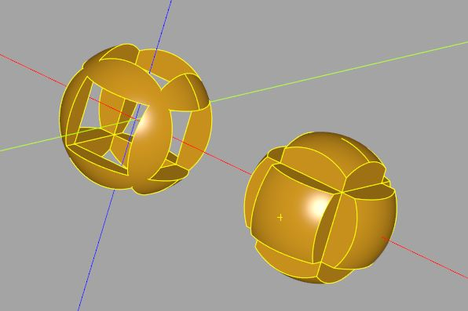

實體布林操作
November 25, 2021在 3D 建模軟體中，聯集（Union）、交集（Intersection）、減集（Difference）是最基本的操作，這讓你可以使用一些相對簡單的 3D 實體，來組合出想要的模型。
聯集（Union）
先來看看聯集，在 CadQuery 中，不同 Workplane 實例中管理的 3D 實體，即使視覺上看來重疊在一起，也不會構成聯集，它們位於不同的座標系統，是不同世界的東西。例如：
import cadquery as cq
sphere = cq.Workplane().sphere(10)
box = cq.Workplane().box(20, 20, 1)
雖然在 CQ-editor 中看來如下，不過實際上是兩個模型，並不會自動構成聯集：
若是用同一個 Workplane 實例來管理 3D 實體，大多數的情況下，新加入的 3D 實體，Workplane 實例會試著與已在管理中的 3D 實體進行聯集。例如：
import cadquery as cq
sphere_box = (cq.Workplane()
.sphere(10)
.box(20, 20, 1)
)
在 CQ-editor 中，雖然視覺上看到的結果還是跟上圖一樣，不過球與方塊會進行聯集；方才談到，大多數的情況下，新加入的 3D 實體，Workplane 實例會試著與已在管理中的 3D 實體進行聯集，會這麼說的原因在於，Workplane 的大多數建立 3D 實體的方法會有 combine 參數，預設值是 True，作用就是將新加入的 3D 實體與管理中的 3D 實體結合，在某些情況下，你會需要將 combine 設為 False，這之後有機會再來談。
減集（Difference）
Workplane 的某些方法會有 cut 參數，大部份會預設為 False，然而有少數會預設為 True，例如 text 方法的 cut 預設就是 True：
import cadquery as cq
txt = (cq.Workplane()
.text('A', 10, 10) # 文字、字型大小、高度
.text('B', 10, 10)
)
若方法有 cut 參數且設為 True，Workplane 實例會試著與已在管理中的 3D 實體進行聯減集，因此執行以上程式會看到字被挖掉了一部份：
如果要讓 A 與 B 聯集，方式之一是將 cut 設為 False，combine 設為 True（預設是 False）：
import cadquery as cq
txt = (cq.Workplane()
.text('A', 10, 10)
.text('B', 10, 10, cut = False, combine = True)
)
執行結果如下：
另一個方式是，使用 union 方法明確地指定要執行聯集，例如，以下執行結果同上圖：
import cadquery as cq
txt = (cq.Workplane()
.text('A', 10, 10)
.union(
cq.Workplane().text('B', 10, 10)
)
)
你可以在〈CadQuery API Reference〉中，找到 API 文件說明，CadQuery 有許多 API，這應該是你會經常查詢的文件。
Workplane 有個 cut 方法，可以明確地指定進行減集：
import cadquery as cq
radius = 10
boxes = (cq.Workplane()
.box(radius * 2, radius, radius)
.box(radius, radius * 2, radius)
.box(radius, radius, radius * 2)
)
cutted_sphere = (cq.Workplane()
.sphere(radius)
.cut(boxes))
show_object(cutted_sphere)
在上例中，boxes 是三個立方塊的結合，然後與一個管理了球的 Workplane 進行減集，這邊已經有 CadQuery 的風格了，也就是透過 Workplane 方法鏈操作，表示出一組相關聯的操作構成的 3D 實體，執行之後會看到以下畫面：
雖然 CadQuery 鼓勵你進行鏈狀操作，不過，不用為了鏈狀操作而鏈狀操作，只要能清楚表達程式碼意圖，適當地運用多個 Workplane，其實是件好事。
交集（Intersection）
若要進行交集，可以透過 intersect 方法，例如：
import cadquery as cq
radius = 10
boxes = (cq.Workplane()
.box(radius * 2, radius, radius)
.box(radius, radius * 2, radius)
.box(radius, radius, radius * 2)
)
intersected_sphere = (cq.Workplane()
.sphere(radius)
.intersect(boxes))
show_object(intersected_sphere)
這會產生以下的模型：
Workplane 定義了 __add__、__and__ 等運算子方法，union 可以直接透過 +、| 來達到，cut 可以直接透過 -，intersect 可以直接透過 &，例如：
import cadquery as cq
radius = 10
boxes = (cq.Workplane()
.box(radius * 2, radius, radius)
.box(radius, radius * 2, radius)
.box(radius, radius, radius * 2)
)
sphere = cq.Workplane().sphere(radius)
cutted_sphere = sphere - boxes
intersected_sphere = (sphere & boxes).translate((radius * 3, 0))
show_object(cutted_sphere)
show_object(intersected_sphere)
這會產生以下的模型：

對 CadQuery 來說，其實執行 union、cut、intersect 算是偏低階的操作，Workplane 基於這些操作封裝了一些更高階的方法，例如在模型上挖洞，就有 hole、cboreHole 等方法，這之後有機會再來介紹。